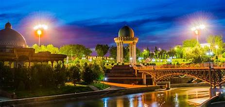
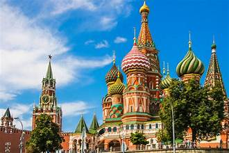

Ташкент — столица Узбекистана и крупнейший город страны, расположенный на востоке Центральной Азии. Город имеет более 2,5 миллионов жителей и является важным экономическим, культурным и образовательным центром Узбекистана. Ташкент был основан более 2000 лет назад и имеет богатую историю. В разные эпохи он был важным узлом на Великом шелковом пути. Сегодня город сочетает в себе элементы советской архитектуры и современные здания. Среди известных достопримечательностей — Хаст-Имам, площади Независимости и Амир Темур, а также многочисленные мечети, медресе и музеи. Ташкент — важный транспортный узел, с развитой сетью метро, а также международными аэропортами и железнодорожными станциями.
Лондон — столица Великобритании, крупнейший город страны, расположенный на реке Темзе. Основанный римлянами в I веке, он стал важным финансовым, культурным и историческим центром мира. Среди его главных достопримечательностей — Биг-Бен, Тауэр, Букингемский дворец и Вестминстерское аббатство. Лондон славится своими музеями, театрами и парками, такими как Гайд-парк. Город также является одним из ведущих финансовых центров с такими районами, как Сити и Вест-Энд. В Лондоне проживает более 9 миллионов человек, и он известен своей мультикультурностью и разнообразием.
Москва — столица России, крупнейший город страны и один из важнейших политических, экономических и культурных центров. Город расположен на реке Москве и был основан в 1147 году. Сегодня Москва — это динамичный мегаполис с населением более 12 миллионов человек. Среди главных достопримечательностей города — Кремль, Красная площадь, Храм Василия Блаженного, Третьяковская галерея и Большой театр. Москва также известна своей архитектурой, сочетающей исторические здания и современные небоскрёбы. Город является центром бизнеса и финансов, а также важным культурным и образовательным хабом.
